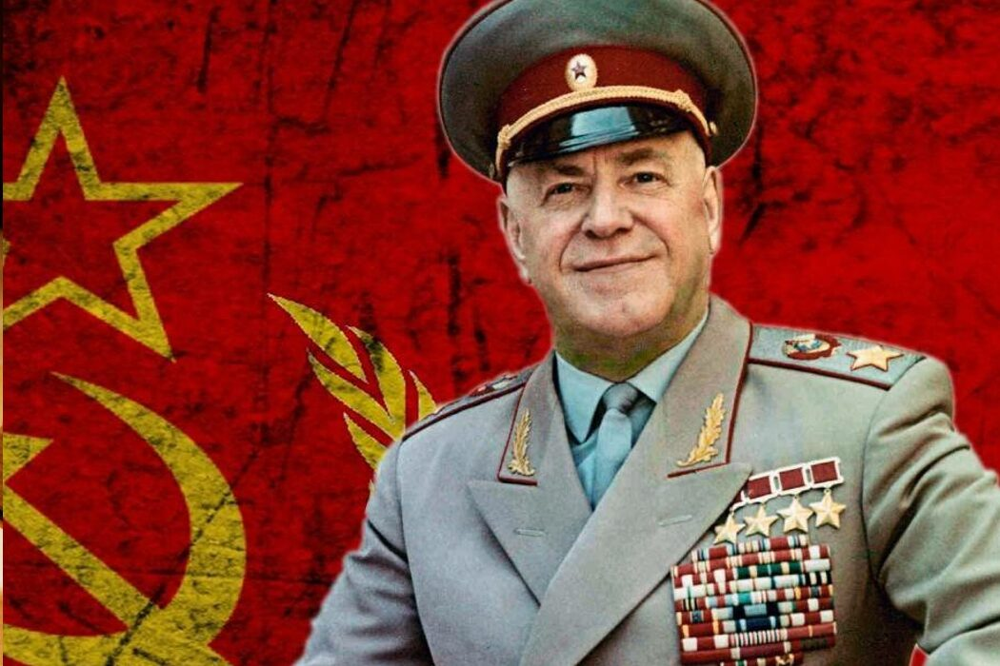
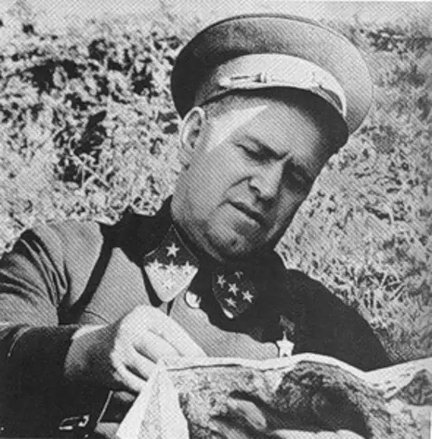
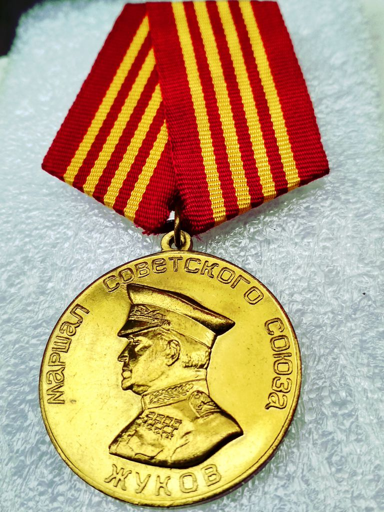
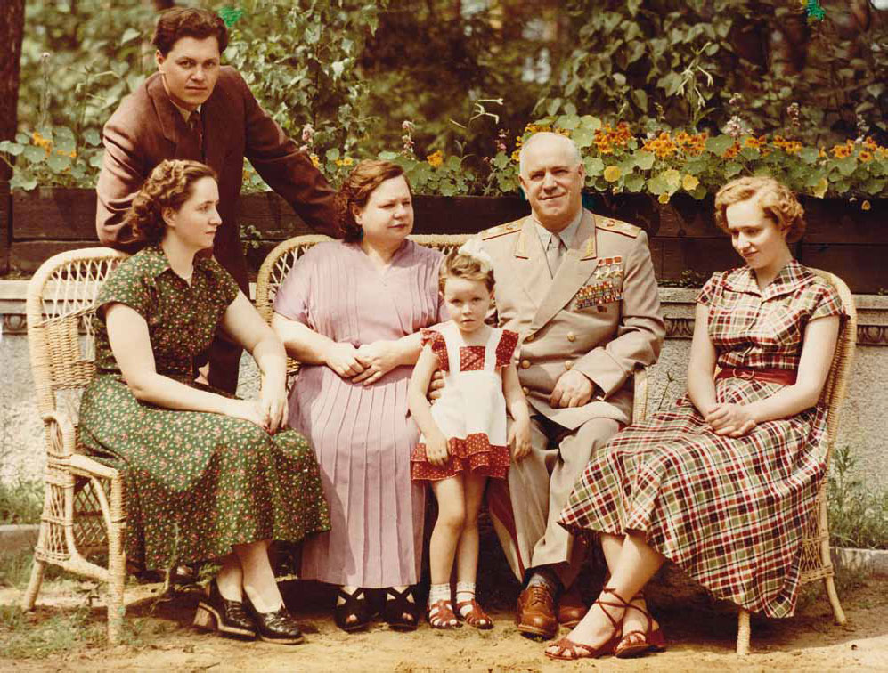
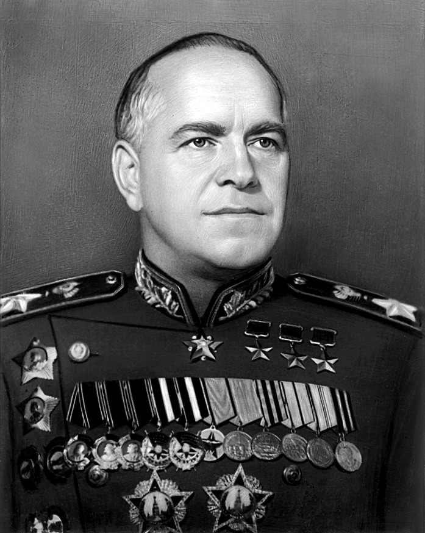

Георгий Константинович Жуков (1896-1974)
Георгий Константинович Жуков – легендарный советский полководец, маршал Советского Союза, который был одной из ключевых фигур Красной армии во время Великой Отечественной войны и впоследствии получил в народе прозвище Маршал Победы. Его биография полна мифов, но даже оперируя достоверными фактами, невозможно рассказать о всех заслугах полководца перед родиной.
Великий Маршал Советского Союза
Победоносный военачальник, прошедший путь от кавалерийского унтер-офицера армии Российской Империи до маршала Советского Союза. Будучи выходцем из простой крестьянской семьи, он дошёл до таких вершин власти и достиг столь сильной популярности в войсках и среди народа, что его опасался даже сам Сталин. Жёсткий, решительный и харизматичный полководец, сильная и упорная личность. Безмерная слава и признание, опала, затем возвращение на высочайшую воинскую должность, через несколько лет вновь опала, временное забвение, из которого он
возвращается как человек-символ победы, полководец-легенда. возвращается как человек-символ Победы, полководец-легенда. В этой статье мы расскажем краткую историю жизни, военной и политической карьеры Георгия Константиновича Жукова.
Великая Отечественная Война Подробнее >> |
Воинские звания Подробнее >> |
|---|---|
Семья Подробнее >> |
Путь до маршала Подробнее >> |